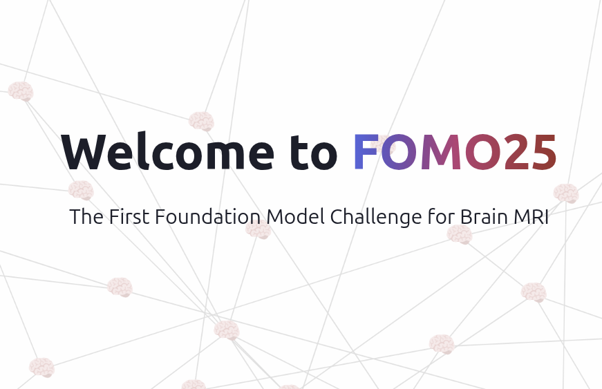

Research Fellow, Athinoula A. Martinos Center for Biomedical Imaging, 2021–2023
PhD Degree, Medical Image Analysis, Technical University of Denmark, 2018–2021
Machine Learning Intern, Horus Technology, 2017
Master Degree, Computer Science, Politecnico di Milano, 2015–2017
Bachelor Degree, Computer Science, Politecnico di Milano, 2012–2015
Publications
Selected publications, for a full list see Google Scholar.

Towards Brain MRI Foundation Models for the Clinic: Findings from the FOMO25 Challenge
Stefano Cerri*, Asbjørn Munk*, Vardan Nersesjan, Christian Hedeager Krag, Jakob Ambsdorf, ..., Michael Eriksen Benros, Juan Eugenio Iglesias, Mads Nielsen
A large-scale heterogeneous 3D magnetic resonance brain imaging dataset for self-supervised learning
Stefano Cerri*, Asbjørn Munk*, Jakob Ambsdorf, Julia Machnio, Sebastian Nørgaard Llambias, Vardan Nersesjan, Christian Hedeager Krag, Peirong Liu, Pablo Rocamora García, Mostafa Mehdipour Ghazi, Mikael Boesen, Michael Eriksen Benros, Juan Eugenio Iglesias, Mads Nielsen
Cross-disorder comparison of Brain Structures among 4,836 Individuals with Mental Disorders and Controls utilizing Danish population-based Clinical MRI Scans